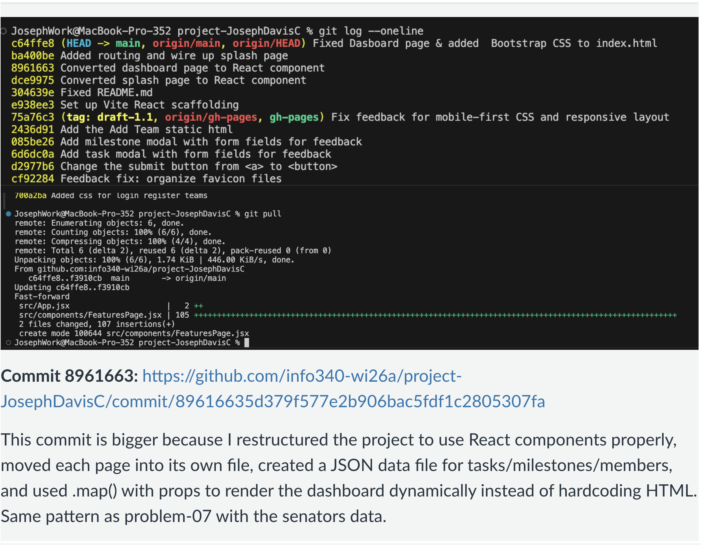

Lab - February 25, 2026
This week we worked on Project Draft 2 (due Sunday). We needed to demonstrate progress by showing substantial commits pushed to GitHub and that all team members have pulled and integrated changes.
git log --oneline with team commits pulled and integratedCommit 8961663: Restructured the project to use React components properly, moved each page into its own file, created a JSON data file for tasks/milestones/members, and used .map() with props to render the dashboard dynamically instead of hardcoding HTML.
